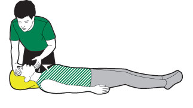
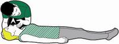
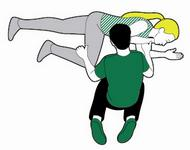
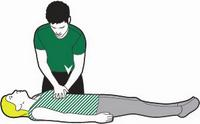

If someone is not moving and does not respond when you call them or gently shake their shoulders, they are unresponsive.
Steps
Step 1 of 5: Open their airway
- If they are unresponsive, open their airway.
- Place one hand on the casualty’s forehead and two fingers under their chin. Gently tilt their head back and lift the chin.

Step 2 of 5: Check their breathing
- Maintain the head tilt and chin lift, and look for chest movement.
- Listen for the sounds of normal breathing and see if you can feel their breaths on your cheek.
- If they are not breathing, you need to start CPR (cardiopulmonary resuscitation – a combination of chest pressure and rescue breaths) straight away.

Step 3 of 5: Call for help and start CPR
- Call 999 or 112 for an ambulance, or get someone else to do it.
- Next you’ll need to perform CPR - cardiopulmonary resuscitation. This involves giving someone chest compressions and rescue breaths to keep their heart and circulation going.
- If they start breathing normally again, stop CPR and put them in the recovery position.

Step 4 of 5: Giving chest compressions
- Kneel down beside the casualty on the floor level with their chest.
- Place the heel of one hand towards the end of their breastbone, in the centre of their chest.
- Place the heel of your other hand on top of the first hand and interlock your fingers, making sure you keep the fingers off the ribs.
- Lean over the casualty, with your arms straight, pressing down vertically on the breastbone, and press the chest down by 5-6cm (2-2½in).
- Release the pressure without removing your hands from their chest. Allow the chest to come back up fully – this is one compression.
- Repeat 30 times, at a rate of about twice a second or the speed of the song ‘Staying Alive’.
- Give two rescue breaths.

Step 5 of 5: How to give a rescue breath
- Ensure the casualty’s airway is open.
- Pinch their nose firmly closed.
- Take a deep breath and seal your lips around their mouth.
- Blow into the mouth until the chest rises.
- Remove your mouth and allow the chest to fall.
- Repeat once more.
- Carry on giving 30 chest compressions followed by two rescue breaths for as long as you can, or until help arrives.
- If the casualty starts breathing normally again, stop CPR and put them in the recovery position.